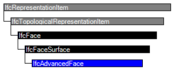

Natural language names
 | Fläche - komplex |
 | Advanced Face |
 | Face avancée |
| Fläche - komplex |
| Advanced Face |
| Face avancée |
| Item | SPF | XML | Change | Description | IFC2x3 to IFC4 |
|---|---|---|---|---|
| IfcAdvancedFace | ADDED | IFC4 Addendum 1 | ||
| IfcAdvancedFace | ||||
| SameSense | MODIFIED | Type changed from BOOLEAN to IfcBoolean. |
An advanced face is a specialization of a face surface that has to meet requirements on using particular topological and geometric representation items for the definition of the faces, edges and vertices.
An IfcAdvancedFace is restricted to:
NOTE Entity adapted from advanced_face defined in ISO 10303-511.
HISTORY New entity in IFC4
| Rule | Description |
|---|---|
| ApplicableSurface | The geometry used in the definition of the face shall be restricted. The face geometry shall be an IfcElementarySurface, IfcSweptSurface, or IfcBSplineSurface. |
| RequiresEdgeCurve | The geometry of all bounding edges of the face shall be fully defined as IfcEdgeCurve's. |
| ApplicableEdgeCurves | The types of curve used to define the geometry of edges shall be restricted to IfcLine, IfcConic, IfcPolyline, or IfcBSplineCurve. |

| # | Attribute | Type | Cardinality | Description | C |
|---|---|---|---|---|---|
| IfcRepresentationItem | |||||
| LayerAssignment | IfcPresentationLayerAssignment @AssignedItems | S[0:1] | Assignment of the representation item to a single or multiple layer(s). The LayerAssignments can override a LayerAssignments of the IfcRepresentation it is used within the list of Items. | X | |
| StyledByItem | IfcStyledItem @Item | S[0:1] | Reference to the IfcStyledItem that provides presentation information to the representation, e.g. a curve style, including colour and thickness to a geometric curve. | X | |
| IfcTopologicalRepresentationItem | |||||
| IfcFace | |||||
| 1 | Bounds | IfcFaceBound | S[1:?] | Boundaries of the face. | X |
| HasTextureMaps | IfcTextureMap @MappedTo | S[0:?] | X | ||
| IfcFaceSurface | |||||
| 2 | FaceSurface | IfcSurface | [1:1] | The surface which defines the internal shape of the face. This surface may be unbounded. The domain of the face is defined by this surface and the bounding loops in the inherited attribute SELF\FaceBounds. | X |
| 3 | SameSense | IfcBoolean | [1:1] | This flag indicates whether the sense of the surface normal agrees with (TRUE), or opposes (FALSE), the sense of the topological normal to the face. | X |
| IfcAdvancedFace | |||||
<xs:element name="IfcAdvancedFace" type="ifc:IfcAdvancedFace" substitutionGroup="ifc:IfcFaceSurface" nillable="true"/>
<xs:complexType name="IfcAdvancedFace">
<xs:complexContent>
<xs:extension base="ifc:IfcFaceSurface"/>
</xs:complexContent>
</xs:complexType>
ENTITY IfcAdvancedFace
SUBTYPE OF (IfcFaceSurface);
WHERE
ApplicableSurface : SIZEOF (
['IFCGEOMETRYRESOURCE.IFCELEMENTARYSURFACE',
'IFCGEOMETRYRESOURCE.IFCSWEPTSURFACE',
'IFCGEOMETRYRESOURCE.IFCBSPLINESURFACE'] *
TYPEOF(SELF\IfcFaceSurface.FaceSurface)) = 1;
RequiresEdgeCurve : SIZEOF(QUERY (ElpFbnds <*
QUERY (Bnds <* SELF\IfcFace.Bounds |
'IFCTOPOLOGYRESOURCE.IFCEDGELOOP' IN TYPEOF(Bnds.Bound)) |
NOT (SIZEOF (QUERY (Oe <* ElpFbnds.Bound\IfcEdgeLoop.EdgeList |
NOT('IFCTOPOLOGYRESOURCE.IFCEDGECURVE' IN
TYPEOF(Oe\IfcOrientedEdge.EdgeElement)
))) = 0
))) = 0;
ApplicableEdgeCurves : SIZEOF(QUERY (ElpFbnds <*
QUERY (Bnds <* SELF\IfcFace.Bounds |
'IFCTOPOLOGYRESOURCE.IFCEDGELOOP' IN TYPEOF(Bnds.Bound)) |
NOT (SIZEOF (QUERY (Oe <* ElpFbnds.Bound\IfcEdgeLoop.EdgeList |
NOT (SIZEOF (['IFCGEOMETRYRESOURCE.IFCLINE',
'IFCGEOMETRYRESOURCE.IFCCONIC',
'IFCGEOMETRYRESOURCE.IFCPOLYLINE',
'IFCGEOMETRYRESOURCE.IFCBSPLINECURVE'] *
TYPEOF(Oe\IfcOrientedEdge.EdgeElement\IfcEdgeCurve.EdgeGeometry)) = 1 )
)) = 0
))) = 0;
END_ENTITY;
 EXPRESS-G diagram
EXPRESS-G diagram Link to this page
Link to this page